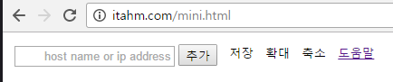
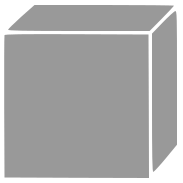

요구 및 주의 사항
-
운영체제에 최신 Java 버전 (8u101) 을 설치하고 업데이트 하십시오.
낮은 Java 버전에서는 ICMP가 아닌 TCP 7을 사용하여 Ping을 수행합니다.
-
리눅스의 경우 root 권한으로 서비스가 실행 되어야 합니다.
-
jar 파일을 실행시킨 폴더에 itahm.mini.json 파일이 생성됩니다. 이 파일에 서비스의 모든 정보가 저장 됩니다. (삭제하거나 수정하지 마십시오.)
실행과 옵션
-
콘솔창에서 (command line) 아래와 같이 실행시키십시오.
java -jar ITAhM.mini.jar [-옵션] [옵션값]
-
ping timeout은 Default 3000ms 입니다.
변경하고자 하는 경우 -timeout [변경할 시간(milliseconds)] 와 같이 실행하십시오.
서비스와 동일한 네트워크 내에 있는 IP는 연결되어있지 않더라도 1500ms 에서 항상 Ping이 성공합니다. (Java의 특성)이를 방지하려면 timeout을 1000ms 이내로 변경하십시오.
이와 같은 현상에 대해 자세한 내용은 연락처로 문의해 주십시오.
-
서비스의 Default TCP는 2015 입니다.
변경하고자 하는 경우 -tcp [변경할 TCP] 와 같이 실행하십시오.
조작
장비의 추가
-
입력창에 ip 주소, host명 또는 dns명을 입력하고 추가 버튼을 누릅니다.
-
추가된 장비는 구성도의 중앙에 생성됩니다. 장비를 적합한 위치로 이동하고 연결하십시오.
변경사항 저장
-
장비의 추가와 삭제 구성의 변경, 장비간 링크의 연결 등 모든 변경사항은 저장 후 서비스에 반영됩니다.
-
저장하지 않은 변경사항은 재 연결시 모두 초기화 됩니다.
구성도의 확대/축소
-
구성도를 확대하거나 축소할 때는 마우스 휠을 이용하거나 지원하지 않는 경우 확대버튼과 축소버튼을 누릅니다.
장비의 삭제
-
장비를 선택한 후 삭제버튼 ()을 누릅니다.
장비의 연결
-
장비를 선택한 후 연결버튼 (
 )을 드래그하여 다른 장비에 연결합니다.
)을 드래그하여 다른 장비에 연결합니다. -
이미 생성된 연결에 같은 조작을 하면 연결이 삭제 됩니다.
구성의 변경
-
장비를 선택한 후 선택된 장비를 드래그 하면 해당 장비가 이동합니다.
-
선택된 장비가 없거나 선택된 장비 이외의 공간을 드래그 하면 구성도 전체가 이동합니다.
기능
-
장비를 추가하고 서비스에 저장하지 않아 비활성 상태인 장비는 회색()으로 표시됩니다.
-
활성 상태인 장비는 푸른색(
 )으로 표시됩니다.
)으로 표시됩니다.흰색 숫자는 응답속도를 milliseconds 단위로 보여줍니다.
-
활성 상태인 장비중 응답이 없는 장비는 장비 주변에 붉은색 원이 점멸합니다.